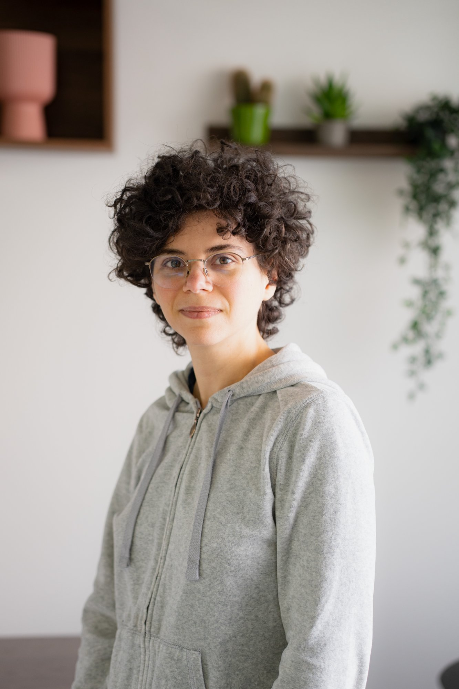

L'environnement de soin
Vos soins dans un cadre pensé pour votre confort


Deux professionnelles passionnées, unies par la même philosophie : vous accompagner avec bienveillance, rigueur et un regard toujours centré sur votre bien-être.

Avec 5 ans d'expérience, dont une solide formation en milieu hospitalier, Sarah apporte au cabinet Viluma bien plus qu'une expertise technique. L'hôpital forge des qualités rares : capacité d'écoute, rigueur clinique, gestion de situations complexes et orientation constante vers la qualité des soins.
Cette expérience hospitalière lui permet de prendre en charge des pathologies variées et parfois complexes, avec un regard complet et pluridisciplinaire que peu de cabinets libéraux peuvent offrir.
Elle est notamment référente de l'atelier de prévention des chutes pour les patients de 60 ans et plus, un programme 100% remboursé sur ordonnance.
Le parcours de Maroua est rare et précieux : 10 ans d'expérience au total, dont les premières années passées en cabinet de kinésithérapie. Cette base solide lui a donné une connaissance fine des pathologies musculo-squelettiques, de la rééducation et du fonctionnement du corps en mouvement.
Il y a 4 ans, elle a choisi de se reconvertir en ostéopathie — non pas pour tourner le dos à la kinésithérapie, mais pour l'enrichir. Cette double expertise lui confère une compréhension unique : elle sait exactement ce que le kiné va travailler, et comment l'ostéopathie peut préparer ou compléter cette rééducation.
Résultat : une approche globale, profonde et cohérente, qui fait la différence pour les patients ayant des problématiques complexes ou récurrentes.